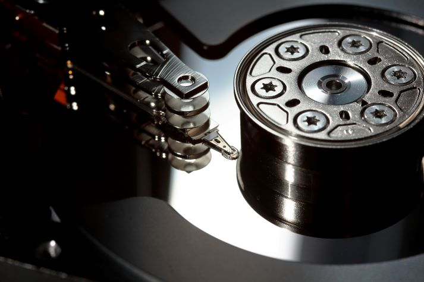

SSD vs HDD - key differences
Solid state drives (SSD) and hard disk drives (HDD) are data storage devices. SSDs store data in flash memory, while HDDs store data in magnetic disks. SSDs are a newer technology that uses silicon's physical and chemical properties to offer more storage volume, speed, and efficiency. However, HDDs are a cost-efficient option if you require infrequent data access in blocks of 1 MB or more at a time.
How do SSDs work?
Solid state drives (SSD) contain nonvolatile flash memory, which comprises a range of integrated circuits to store and retrieve data.
Inside an SSD, you will find floating gate transistors in grid patterns. Each row within these grids is called a page, with many pages forming a block.
An SSD stores information within these blocks. Different charges on the floating gate transistors translate into binary ones and zeroes. This binary is how an SSD communicates data. An SSD controller will track where specific data is stored within the drive, which allows you to access the data on your computer or laptop.
How do HDDs work?
Unlike solid state drives (SSD), hard disk drives (HDD) have several mechanical parts that move together to store and retrieve data.
Inside an HDD device, there are spinning platters with magnetic coatings. Each platter has tracks or concentric circles on it called segments. Each track and sector number creates a unique address that the HDD technology uses to organize and locate data.
A motor spins an internal actuator arm with a read/write head. By reading the charge information on particular segments, the read/write head records and retrieves information. An I/O controller and the operating system of the HDD tell the mechanical parts what to do and when.
HDD vs. SSD: Key differences
While solid state drives (SSD) and hard disk drives (HDD) both allow users to store files, they work differently. Many of the differences that SSDs have from HDDs come from advancements made to the technology.
Read process
The read process is how HDDs and SSDs retrieve data on their devices.
When you ask an HDD to retrieve data, a signal is sent to the I/O controller. The controller then signals to the actuator arm, telling it where the required data is. By reading the charges of the bits at this address, the read/write head gathers the data. An HDD’s latency measures how long it takes for the actuator arm to move to the correct track and sector.
SSDs do not have moving parts. When you attempt to retrieve data, the SSD controller finds that data block's address and begins to read its charge. If the block is idle, a process called garbage collection begins. This process erases inactive blocks, freeing them up for new data storage.
Write process
The write process is how HDDs and SSDs record new information.
Every track and sector in an HDD is a new location to store data. When you attempt to save new data, the read/write head moves to the nearest available location. Once there, it changes the charge of any necessary bits, which saves the information in binary to that track and sector. An internal HDD algorithm processes data before writing it, which ensures it’s formatted correctly.
When you change or rewrite any part of data on an SSD, it must update the entire flash block. First, the SSD copies the old data to an available block. Next, it erases the original block, rewriting the data with changes to the new block. SSDs have extra internal space to move and temporarily duplicate data. As a user, you can’t access this additional storage.


Performance
SSDs run faster and use less energy than HDDs. You can see this when you move large files. SSDs can copy files at upwards of 500 MBps. Newer SDDs can even go up to 3,500 MBps. On the other hand, HDDs only transfer at 30–150 MBps.
SSDs are also faster for running applications. They conduct the read/write process at 50–250 MBps, while HDDs do the same at 0.1–1.7 MBps. HDD speed is limited by the platter rotation speed. Platter rotation speeds are limited to 4200–7200 revolutions per minute (RPM), which makes HDDs slower than the electronic SSDs.
Storage capacity
Both HDDs and SSDs provide ample storage capacity. However, it’s much more common to see larger HDDs as they are more cost-effective. Data storage on an SSD can cost $0.08–0.10 per GB, while an HDD only costs $0.03–0.06 per GB.
Durability
HDDs have moving mechanical parts that make them vulnerable to breakage. If you drop an HDD, you may damage the internal arms’ actuator arms and so damage the device. An HDD’s moving parts consume more energy and expel heat, which reduces the device’s life.
SSDs are more durable as they have no mechanical parts. They also consume less energy, which makes them run cooler. However, you can only rewrite data on a block a finite amount of times.
To ensure that some blocks don’t burn out before others, SSDs use a process called wear leveling. Wear leveling ensures all blocks are used equally in read/write processes. SSDs also use a technique called trim, which helps skip the need to rewrite duplicate data when an SSD erases the original block.
Reliability
You can recover lost or corrupted data on both an SSD and an HDD. However, SSDs overwrite old data files, which makes recovery more complicated. You must go to a specialist with the right equipment to recover data from a damaged SSD.
As a piece of technology, HDDs have been around for longer. This, combined with their read/write processes, make them easier to recover data from.
That being said, neither one is invulnerable to data corruption. Hence, data backup and recovery are best managed through redundancy and data duplication at the software level.
When to use SSD vs. HDD
You should use a solid state drive (SSD) when you need high speeds or deal with frequent read/writes on large data volume. SSDs are a better choice for data analytics or gaming workloads.
On the other hand, a hard disk drive (HDD) is a better choice if you are dealing with data backups, data archives, or throughput-intensive workloads. SSDs are more cost-effective for storing high-volume data with infrequent access.
Summary of differences: SSD vs. HDD
| SSD | HDD | |
|---|---|---|
| Stands for | SSDstands for Solid State Drive | HDDstands for Hard Disk Drive |
| How it works | SSD store data on electronic circuits | HDD store data on mechanically moving, magnetic platters |
| Read process | An SSD controller finds the correct address and reads its charges. | Ann HDD I/O controller sends a signal that moves the actuator arm. The read/write head then reads charges. |
| Write process | An SSD copies data to a new block, then erases the old block. It then writes new to the old block by changing its charges. | An HDD moves the read/write head to the nearest available location. It then writes data by changing the charge of bits in that area. |
| Performance | SSDs are faster. They’re silent and run cooler. | HDDs are slower as their platters have to move around. They release more heat and are noisy. |
| Cost | SSDs cost more | HDDs cost less and larger storage volumes are commercially popular. |
| Durability | SSDs are electrical, which makes them less prone to damage. | HDDs have moving mechanical parts that make them comparatively less durable. |